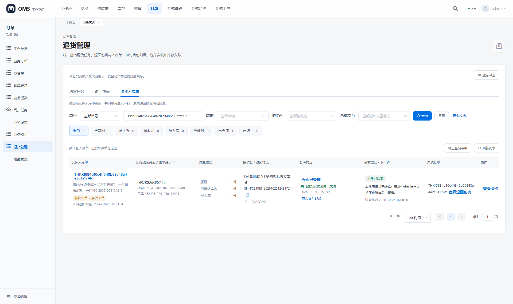
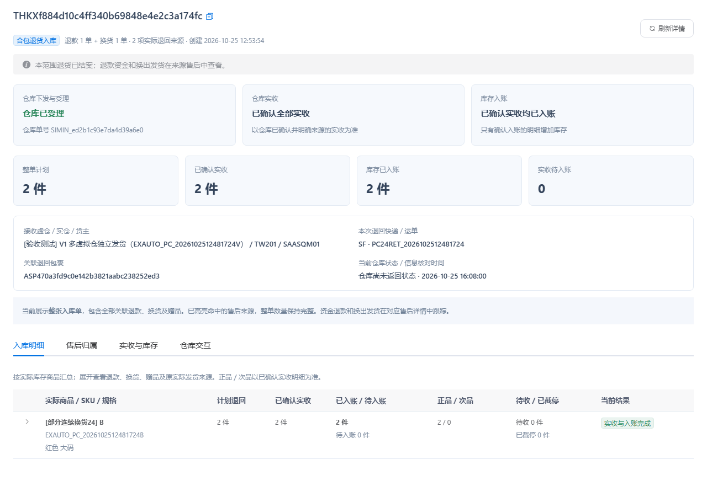
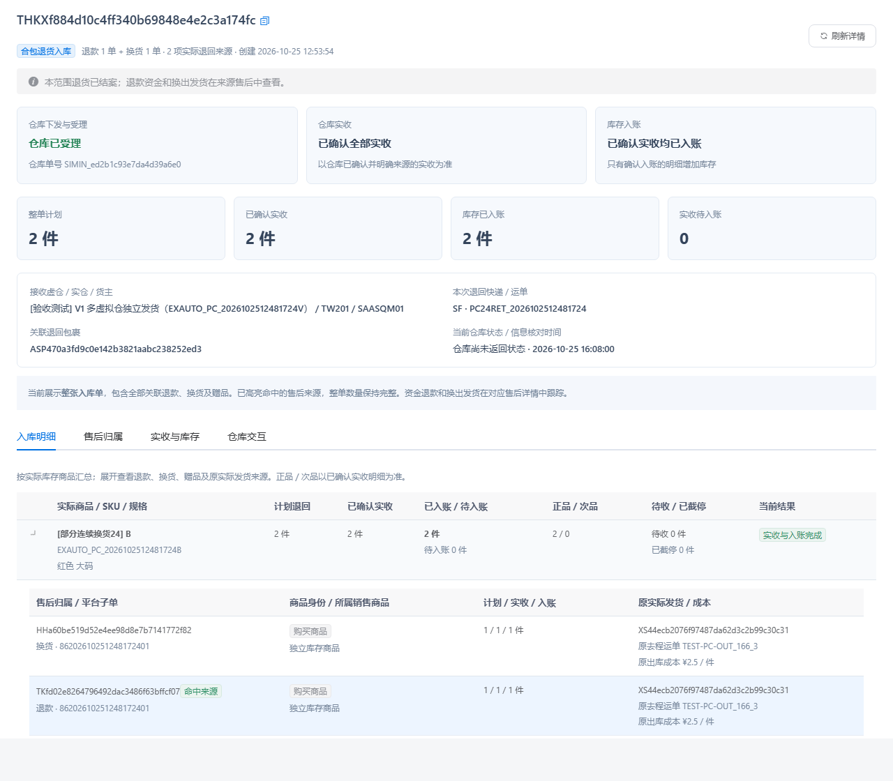
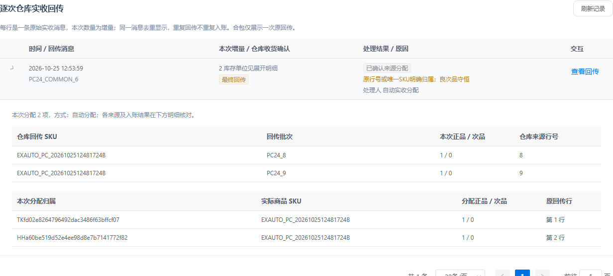
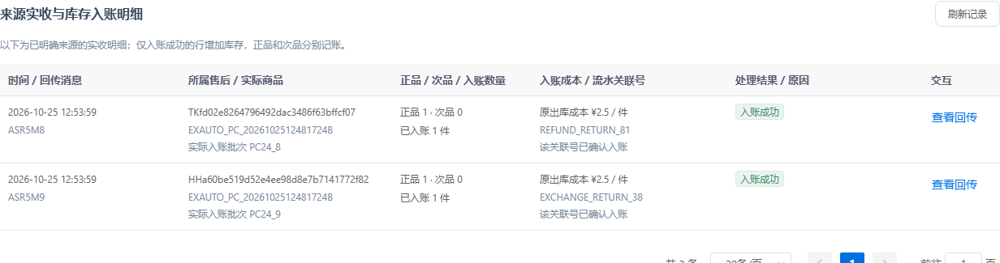
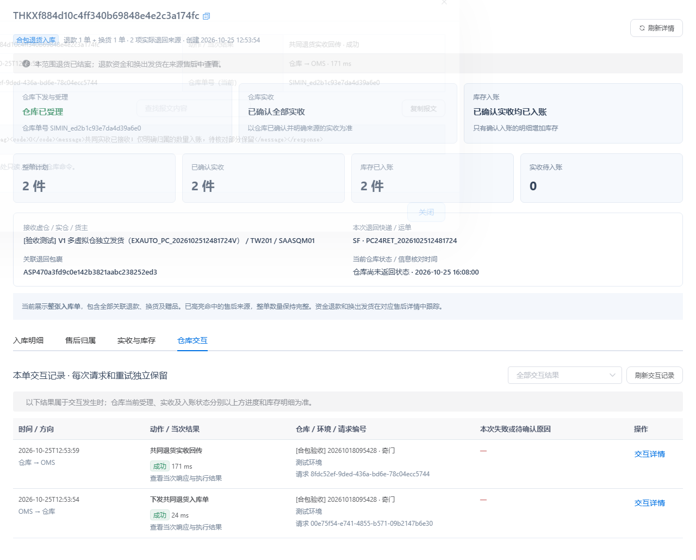
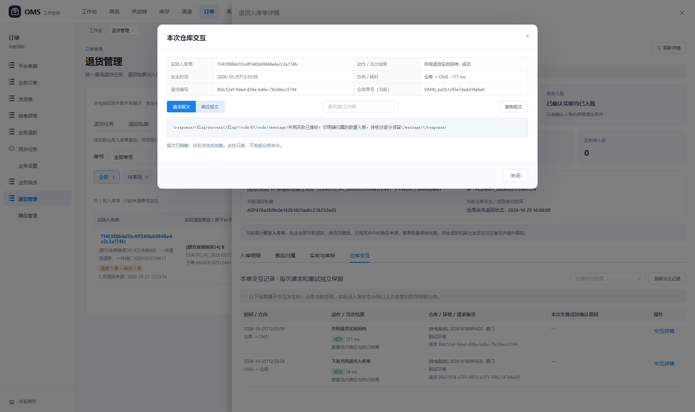
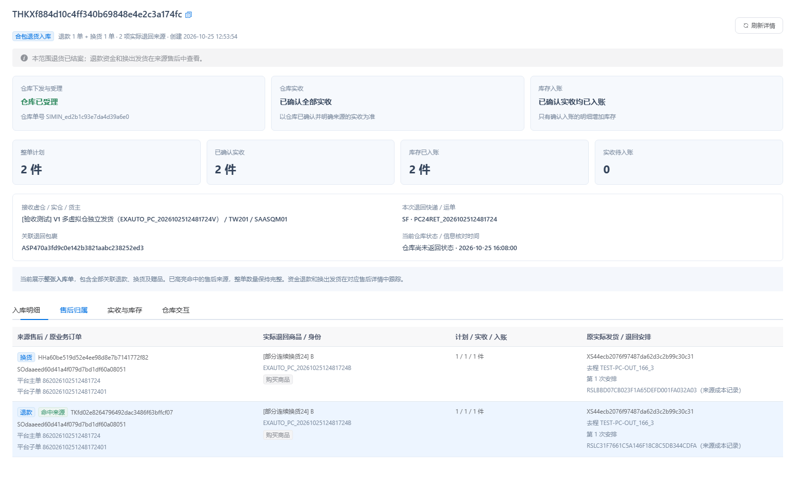
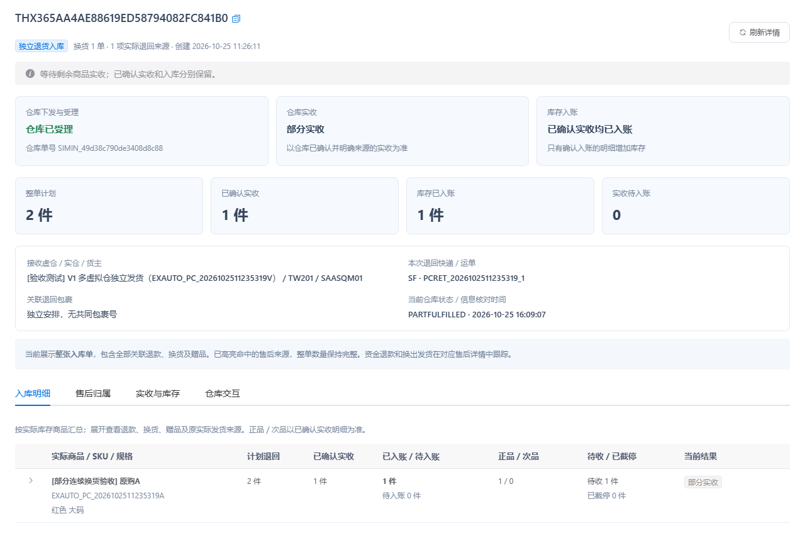

退货入库单列表与详情 · 验收记录
2026-10-25T16:09:10.168728 · 本地项目已部署
后端相关测试98 项通过实际接口验收26 项通过浏览器验收14 项通过 打开合包入库单验收 进入退货入库单列表
已完成的界面
- 列表独立展示仓库当前状态、最近交互动作、当次结果、发生时间和原因；支持状态筛选及中文导出。
- 相同实际库存SKU在列表汇总展示；合包仍保留全部退款、换货和赠品来源。
- 详情默认打开入库明细，分开展示仓库受理、确认实收、库存入账；可查看售后归属、原实际发货、规格及原出库成本。
- 实收页展示唯一原消息、逐行正次品与分配归属；库存明细分别展示入账批次、来源成本及真实入账关联号。
- 仓库交互直接嵌入详情，每次请求和重试独立显示；从库存记录可定位原回传，脱敏请求响应按需加载。
- 原出入库单入口复用同一退货详情，从退款或换货进入时保留命中来源高亮。
场景与实物结果
保留的连续售后场景：原购买A商品3件，第一次换成B商品3件并实际发出；随后B商品1件申请退款100元，另1件换成C商品，剩余B商品1件保留。退款与第二次换货的B商品使用同一退回运单合包，形成一张共同退货入库单。
| 核对项 | 验收结果 |
|---|
| 实际共同入库单 | THKXf884d10c4ff340b69848e4e2c3a174fc |
| 退款来源 | TKfd02e8264796492dac3486f63bffcf07 |
| 换货来源 | HHa60be519d52e4ee98d8e7b7141772f82 |
| 退回运单 | PC24RET_2026102512481724 |
| 实际退回SKU | EXAUTO_PC_2026102512481724B |
| 原实际B商品发货单 | XS44ecb2076f97487da62d3c2b99c30c31 |
| 整单数量 | 计划2件、确认实收2件、库存入账2件；退款与换货各1件 |
| 原回传与来源明细 | 一条原始合包实收消息、两条来源分配、两条入账记录 |
| 成本 | 两个来源分别保留原出库成本2.50元/件 |
| 部分实收场景 | 独立换货退回计划2件，只实收并入账1件；仍展示待收1件，未判定收齐 |
库存核对
本轮验收只读取保留单据；公司库存、仓库库存、订单状态、队列和任务配置均与验收前保护基线一致。浏览器未发起任何业务变更接口。
| 商品 | 公司总库存 / 可用 | 仓库总库存 / 可用 | 预占 / 已分配 / 冻结 |
|---|
| A | 10 / 10 | 10 / 10 | 0 / 0 / 0 |
| B | 9 / 9 | 9 / 9 | 0 / 0 / 0 |
| C | 9 / 9 | 9 / 9 | 0 / 0 / 0 |
以上是保留自动流程验收单据的库存结果；本轮UI验收没有再次退货、出库或记账。仓库交互记录来自本地TEST环境。
逐项验收
| 接口检查 | 结果 |
|---|
| 合包入库单列表只展示一次共同仓单和仓库交互摘要 | 通过 |
| 列表摘要不读取请求响应报文 | 通过 |
| 同一实际SKU在列表汇总展示而非重复两行 | 通过 |
| 整张仓单保留退款及换货B各1件并只高亮当前退款 | 通过 |
| 实际商品名称及原实际发货沿换出B追溯 | 通过 |
| 原出库成本按各来源保留 | 通过 |
| 合包只显示一次原始回传和两条实际回传行 | 通过 |
| 原始回传直接展示分配给哪张退款和换货 | 通过 |
| 实收时间使用统一可读格式 | 通过 |
| 退款与换货分别入账且批次原成本和流水号可追溯 | 通过 |
| 入账明细不暴露原始回传和私人地址 | 通过 |
| 入账明细分页不丢行不重复 | 通过 |
| 交互记录绑定实际共同仓单并涵盖下发与回传 | 通过 |
| 列表按仓库已受理筛选保持整单2件 | 通过 |
| 已受理仓单不被当作下发失败 | 通过 |
| 部分实收仍保留计划2实收1入账1且不是最终回传 | 通过 |
| 含赠品仓单保持商品身份并支持来源入账查询 | 通过 |
| 多退款共同THK同样可追溯原始实收及来源入账 | 通过 |
| 非法分页、私有台账或不存在仓单被拒绝 | 通过 |
| 非法分页、私有台账或不存在仓单被拒绝 | 通过 |
| 非法分页、私有台账或不存在仓单被拒绝 | 通过 |
| 非法分页、私有台账或不存在仓单被拒绝 | 通过 |
| 筛选及公司边界校验有效 | 通过 |
| 筛选及公司边界校验有效 | 通过 |
| 所有保留验收单据库存队列及任务配置保持一致 | 通过 |
| 直接打开尚未建立查询缓存的共同仓单可自动补齐全部来源 | 通过 |
页面检查
- 列表显示独立仓库状态和最近交互结果，一张共同仓单只显示一行 通过
- 专用详情有四个页签，默认按实际B商品汇总整单2件并分开展示三段进度 通过
- 初次查看商品不预加载日志或原始报文 通过
- 展开实际商品可核对退款和换货各1件及原实际发货和成本 通过
- 来源页保留整单归属并高亮从当前退款进入的来源 通过
- 实收页仅一条原回传，库存页显示两条来源入账和各自流水关联号 通过
- 从库存明细定位原仓库交互，报文仍按需加载 通过
- 交互详情可查看已脱敏请求响应，并区分当次结果和当前仓单状态 通过
- 仓库交互页在原详情内展示下发回传时间动作结果及请求编号 通过
- 导出同步包含中文仓库受理及最近交互结果 通过
- 列表仓库交互筛选有效，已受理共同单不误归为下发失败 通过
- 原出入库单入口也使用同一专用退货详情，保留退款来源高亮 通过
- 部分实收单保留计划2件实收1件入账1件和待收1件 通过
- 验收页面无JavaScript错误且未调用任何业务变更接口 通过
回归覆盖与查询方式
相关测试覆盖合包分配、共同下发、退货只读明细、查询投影、仓库日志及公司隔离；新增检查覆盖查询失败仍保留已受理状态、最终短收待归属、正次品和原成本、分页、私有来源台账不可当作仓单查询。
列表只读取可筛选摘要；交互变更按实际仓单通知关联来源，保留原有版本确认机制。明细先按完整仓单号定位来源，批量读取；实收、入账及异常记录分页，报文点击后加载。刷新界面不主动查询仓库或执行实收入账。
本机暖请求耗时仅供本次验收参考：{'list': {'samples_ms': [63.3, 20.3, 39.5], 'median_ms': 39.5}, 'detail': {'samples_ms': [31.7, 40.5, 30.8], 'median_ms': 31.7}, 'stock': {'samples_ms': [24.4, 20.6, 39.3], 'median_ms': 24.4}}；不是生产环境性能承诺。
页面截图
列表：仓库受理与当次交互分开
详情：三段进度与实际库存SKU汇总
实际商品展开核对售后与原发货
原始实收及分配归属
来源实收和库存入账流水
当前单据的仓库交互记录
按需加载脱敏报文
原出入库单入口复用专用详情
部分实收保留剩余待收数量